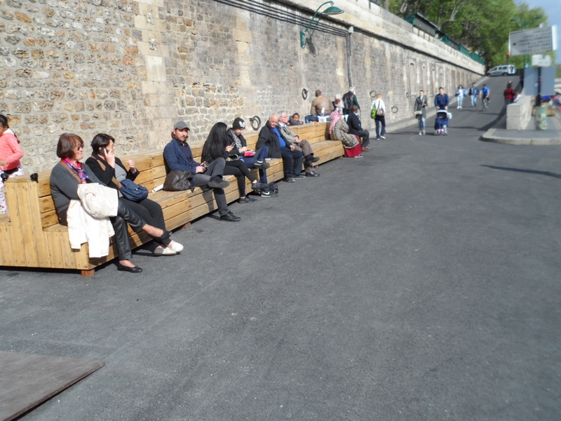
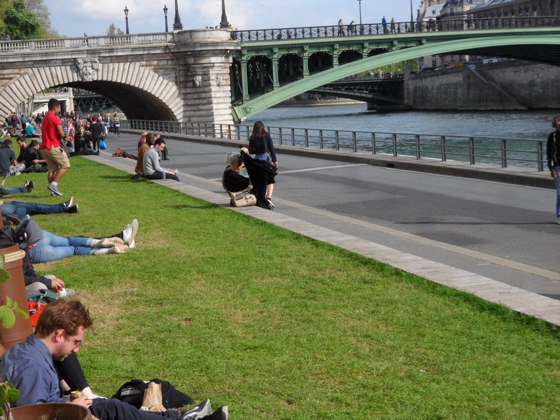
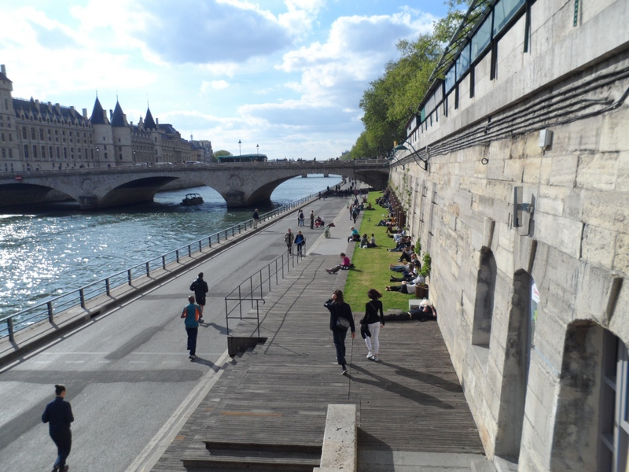
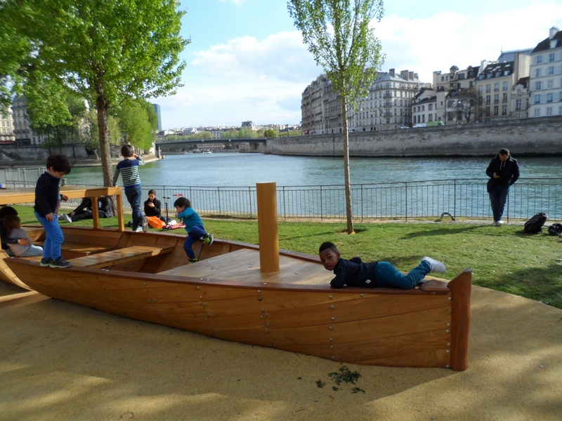
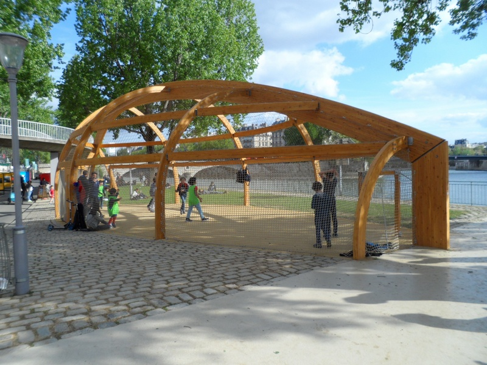
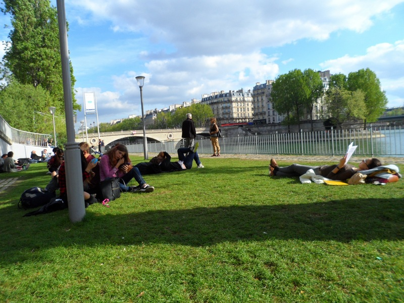
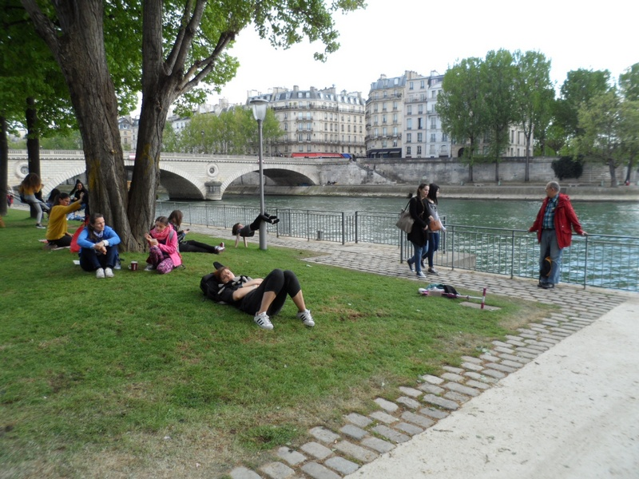
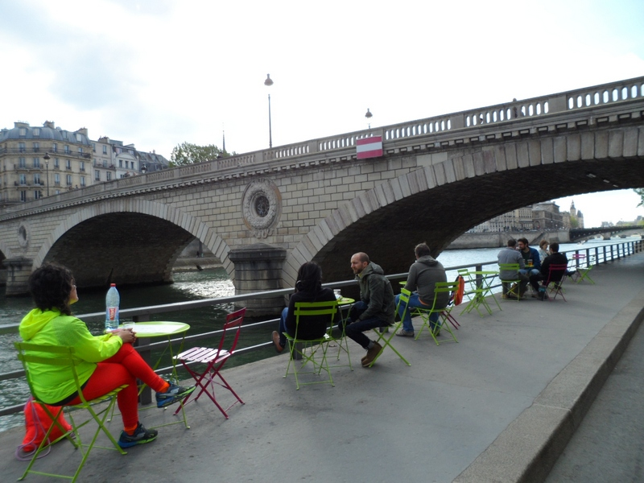
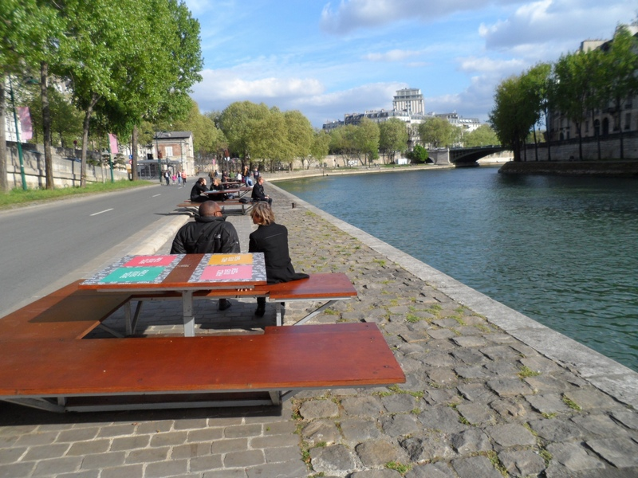

(Updated on April 12, 2017)
What's New in Paris
Parc Rives de Seine (inaugurated on 2 April 2017)
Put mouse on photo to stop the slide display.
The latest attraction in Paris is a 4.5km promenade along the right bank of the Seine River starting from the Tuileries tunnel and ending at the Arsenal port near Place de la Bastille. It was inaugurated by Anne Hidalgo, the Mayor of Paris, on April 2, 2017.
Called "Parc Rives de Seine", it is meant to link up with the existing 2.5km promenade along the left bank via Pont Royal or the Passerelle Leopold-Sedar-Senghor (Pont Solférino in the older maps) to make a total of 7km in all. However much of it is not totally new, as the heavily-cobbled surfaces in some sections have not been tarred, making it difficult for a promenade if one is not wearing comfortable sneakers. The innovative part really starts from the Pont Neuf side and ends at Pont Marie near the Notre-Dame Cathedral. Note though that on a sunny day you should start your walk from the Pont Neuf side and not the Notre-Dame side if you do not want to have the sun's rays smack in your eyes!

Picture shows the steps leading from Pont Neuf (opposite the Samaritaine) where your promenade can begin. There is a stall selling snacks here.

There are plenty of long "benches" all along the Parc Rives de Seine.

Stretches of green are few and far between but you can still close your eyes and imagine you are in a park.

A long patch of grass along the Seine River for sun-bathers.

A wooden boat for the little ones to have fun with.

A wooden structure with netting all over to allow bigger children enjoy a game of mini-football.

Where is the park? It's here, not far from the Notre-Dame Cathedral.

Another view of the little park along the promenade.

Little tables and chairs are set up near the Pont Louis-Philippe side to face the Seine River.

Tables for picnickers a bit further down near the Pont Marie.